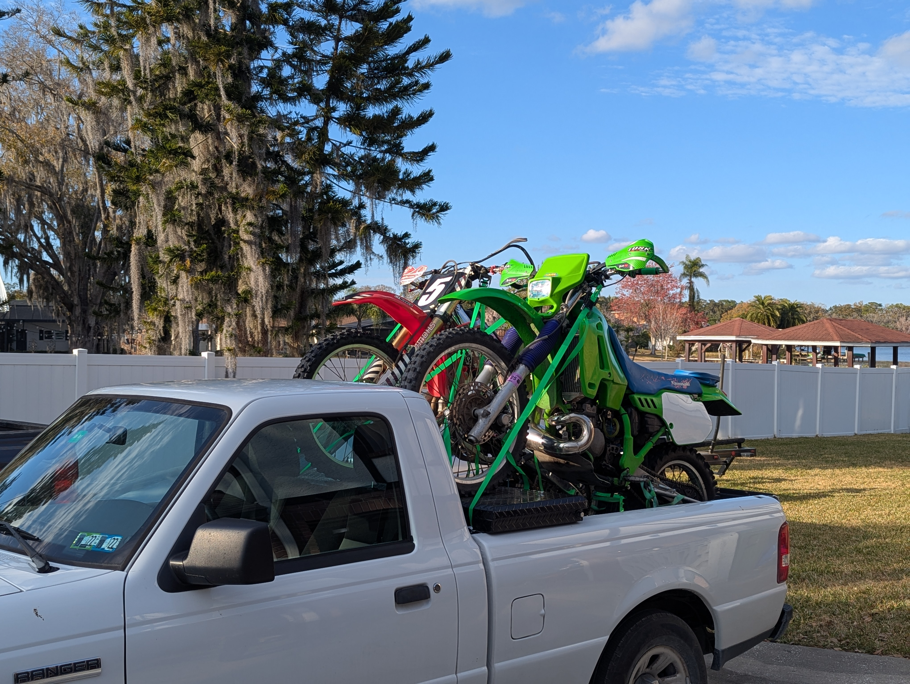
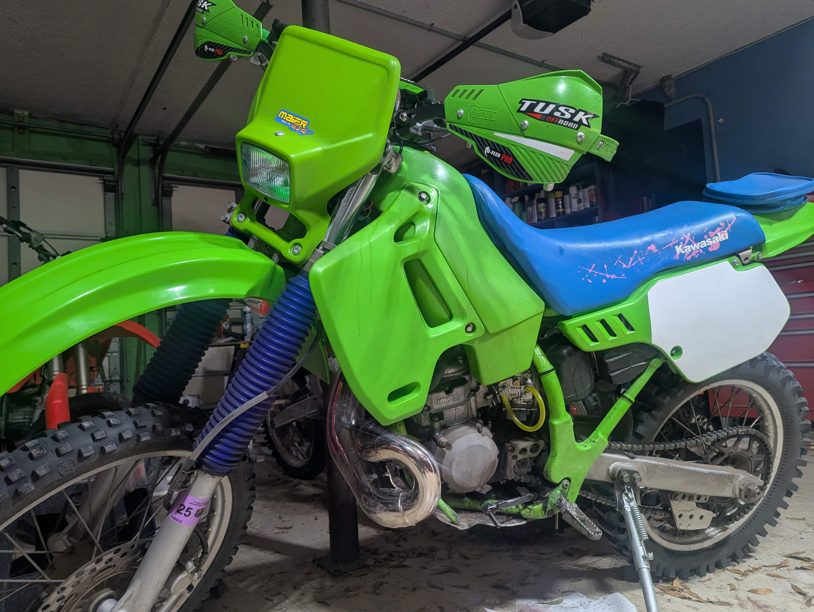
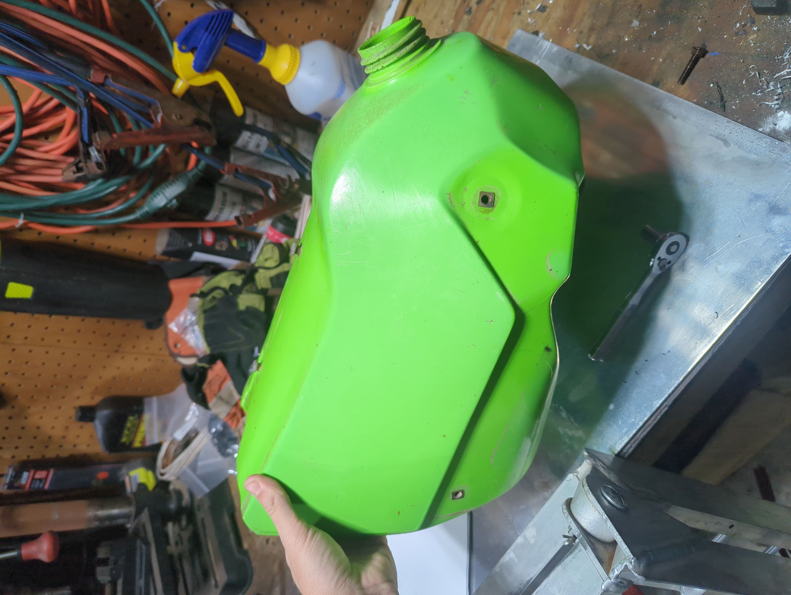
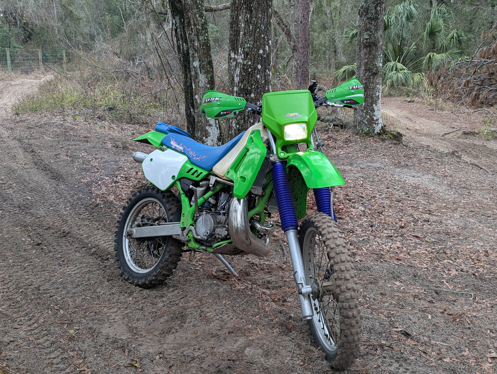

Back together! And other updates / September 17th, 2026
I suppose I never updated this. The bike has been back together for several months at this point. It was just a blown head gasket, the new one seems to be holding fine.
My oil leak on the countershaft has quit leaking, I did replace the seal when the engine was out.
It has been running great, really. It's been on a couple of trips and has performed as well as I would expect it to. I absolutely love riding this bike.
I also added the Tusk Enduro Lighting kit, so it is fully street legal at this point. It's about $70 bucks a year for me to insure through progressive, so really not much at all in the grand scheme of things.
When I added the lighting kit I also hooked up the battery to the stator, and at idle it is around 13.1v with all of the lights on, so it is definitely charging it. Really simple install, I just mounted the Reg/rectifier from baja
designs inside of the air box using rivnuts, so just a small hole was drilled in the air box which is hidden behind the side cover. But talk about wires... So many... But I've kept them all hidden behind the side cover and the headlight.
The Panthera E start is still running strong. I've been practicing slow enduro techniques at home (sorry neighbors) and it has been amazing, and has made the process much less frustrating whenever I stall.
I still have not received my refund... I still send an email here and there but I have not had any luck. It likely won't ever come.
I also got a new set of plastics as a birthday gift as mine have been beat to hell for a while, so I'm looking to find some good graphics to throw on. I'm a firm believer that if 'ya look good 'ya ride good!!!
On another note, I have been getting into 3D printing and eventually I want to start designing parts for the KDX, you know, engine guards, plastics that are around (like the one KIPS cover) and so on. I'm still working on my skills
in SolidWorks, but I'm getting there. I particularly want to design a cover for my Panthera E start, as if I puncture that case I'm as good as screwed.
There's a filament called Carbon Fiber Nylon that should work well for this, high temp resistance, tough, etc. It's just hard to print with, so once I get my hands on some I'll start working on printing with it as well.
Fixing my Blown Head Gasket + Tending to Other Things / June 17th, 2026
I figured I would take the engine out of the bike and do my yearly greasing & somewhat* deep cleaning of bike. There are also a couple other things I am going to take care of as well, like getting my Reg/rectifier mounted in the air box.
I have some rivnuts and a rivnut gun I think I will use to mount the reg/rec in the airbox. That isn't set in stone yet, but I feel the only other place would be somehow in front of the headlight, but that's a lot of extra wire I'd
rather not run if I don't have to.
This also gives me a chance to remove my current radiators and throw on the 220 radiators with the drain plug so I can put a temperature sensor in there and finally my TrailTech Vapor. (Update 11/18/2026... Yeah this hasn't happened yet...)
I am finally going to replace the countershaft seals (again) with genuine OEM ones (that I have had for months). Crossing my fingers it seals this time. It is much easier to replace in my opinion with the engine out.
I took the cylinder off so I can clean the power valves and such. And replace the base gasket. The piston looks good! This is approximately the 50 hour mark on this piston, possibly a bit more. I added an hour meter quite a bit after
I replaced the piston last time so it's a good few hours off. I did note that the carbon spread on the piston indicates it is/was running lean. All I can figure is that it is from when I was trying to dial in the Lectron. It was always
WAY too lean or WAY too rich, with no inbetween it seemed. I can certainly say it is not lean now or with my PWK35.
One thing to note is there was a bit of gunk in the cooling system, not a ton, but here and there. I need to make sure it gets cleaned out.
The BDK Steel valves are holding up great! There is a bit of sludge and carbon on them as I tend to run the bike a bit richer than needed most times. But they look brand new, or at least they will once they are out of the
ultrasonic cleaner.
Electric start, running great etc. Updates / June 8th, 2026
I went to Ohio and rode at Wellsville, and had a blast. According to my father the KDX ran the best it has ever run. I agree. I'd say it's thanks to the SmartCarb SC34. Same for Devils Anse up in WV. I really have no complaints there.
It was great.
I have my electric starter on, and it has been wonderful. Starts right up, barely needs charged and so on. I did end up floating the ground, and I do have a regulator rectifier now, I just have bot hooked it up yet. I just have the
two wires taped up and tied away.
The E start was incredibly easy to install. The hardest part was getting it to seal around the grommet that the wires go through, especially because I had to make 2 new holes in said grommet to run the floated coil through. So it is kind
of just a mess of Ultra black gasket maker, but it is holding and has ever since. I had to take the whole thing apart after I first put it together as it was leaking.
Also, the drain plug for the oil on the starter cover has a slight leak to it, even with a new copper crush washer. I am going to try putting some Loctite 518 on it to seal it up. I seem to have good luck with that stuff even though
it's pricey.
My only real gripe with the E start is not with the kit itself, it's actually Panthera Motorsports. Unfortunately they are just terrible at communicating. Right before they sent out my kit over a month ago they sent me an email stating
that they do not have any antigravity batteries and stock and asked me if it is okay to just send the kit without and refund the 100 or so dollars they charge for the battery to be sent with the kit. I said that is perfectly fine and I will
source my own. Over a month later and I still do not have my refund, and I seem to be getting the run around by email. I ended up talking with Antoine and he seemed very responsive regarding the kit as they forgot to send out one of the
gears in the original packaging, but he said he will look into why I have not gotten my refund and will contact the accounting team. I have not heard from him since even after sending multiple emails. That was on May 1st, since I have last
gotten an email from him. I ended up reaching out to them on Instagram and got a quick response, saying that they will let the team that handles that know, but I have not heard anything. That was last Friday, though. (As of 11/18/2026,
they have still been ignoring me).
I am typically rather patient, as I know companies can get quite busy, but at this point it seems like it may just be incompetence. I can live without the 100 dollars just fine, but it's just the principle of it all.
Sorry for the little rant, but I felt it was necessary for everyone to know if they choose to do business with Panthera. It's a great kit, but just keep in mind what I have stated above.
I actually took the KDX for a ride today at Croom, again it was running amazingly on the Smart Carb. It actually feels like the bike lugs so, so much more. It has some serious low end.
I had to limp the bike back to the truck as I saw coolant dripping out of somewhere, and I did not want to overheat the bike, so I was lugging along in 4th in 5th gear over whoops and all kinds of other things and the bike seemed like
it had so much torque even in such a high gear. I was probably only doing 10-15 mph, so it was really slow for said gears yet it just wanted to keep going. I was pleasantly surprised.
I did a little bit of investigating and it seems like I may have blown a head gasket. I am getting really fine bubbles of coolant running out of the radiator when I rev it up with the cap off, and it also looks like I have coolant in
my gearbox as well as I am getting condensation on the sight glass. So I may also have a blown water pump seal as well, or there was just enough pressure for the coolant to go past the seal. Hopefully that's the case, but if not I do
have a kit to replace the seal.
Other than the bike getting beat up pretty good in Wellsville, that is about it for updates. I cracked a radiator shroud and my tail light lens is cracked to h*ll.
Hope you all are having fun riding out there. I sure am.
Ignition Issues... And Big Updates! / May 4th, 2026
First, as some may have seen from my other posts (On KDXRider), I was having bad ignition issues. It turned out to be my CDI. Rather surprising, as it failed in a way that wouldn't indicate a CDI. It just wouldn't rev out to the powerband.
My guess it 5000-6000 RPM is where it was hitting a 'limiter' at. It almost seemed like it was really really rich at first, so I had chocked it up to my winter jetting. I changed the jetting to my high heat, high humidity, sea
level setting, absolutely no change whatsoever. I ended up testing my ignition coil and source coil. The source coil tested great, it was right in the middle of the ohm range in the manual. My ignition coil tested low, and my spark
seemed very weak. Barely visible in light. I ended up fitting one from my old CRF450 as they are the exact same as far as I can tell, and it was the same. I ended up ordering a used one off eBay for about 20 bucks. Even if it wasn't it,
having a spare doesn't hurt. It was not the coil. Anyways, I did some looking for CDI's and found one from RMStator for about $36, but it was for the H series and 220's. I did some reading and saw they are likely compatible with my E
series, so I ordered it. It does have an extra wire that is not on the E series harness, nor does it have a ground that goes on the ignition coil, but it works fine without them. The other wires hook up just fine. It worked out
amazingly. It's a brand new bike now it seems, so much more power. I must've had a dying ignition for a while. The first test ride she took off like a bat out of h*ll raising the front wheel. And the low end is amazing. No complaints
there.
Link to the CDI: https://www.rmstator.com/products/rms030-104814
I did end up ordering the 220 radiators for the drain plug they have so I can hook up my coolant sensor on my Trail Tech Vapor. I have them now, but I need the other sensor, not the one I have, as it is a much wider bolt than the
one Billie has for his, almost as wide as the drain bolt. So I still need to order that from Trail tech, it's about $35 and I just haven't gotten around to it.
I have the new SC34 from Smart carb. My posts on that are in the dedicated thread for it (on KDXRider). I'll update that here once I have it dialed in.
My fork seal is leaking unfortunately. Not badly, but it is weeping. I am leaving it for now, as I am thinking about a fork swap. I just don't know where to start and I do not have the expertise nor tools to do much fabrication if
needed. Recommendations are welcome, I would prefer USD forks over conventionals. (11/18/2026 update, they are no longer leaking)
I still need to fix my countershaft seal leak, I have the OEM parts, it's just me being lazy for the past few months. (11/18/2026 update, it has been fixed).
I finally have had my Panthera E start shipped out to me. I received the kit last week, but unfortunately the day it was coming in the mail they sent me an email stating that they may have forgotten to put a gear in the package and to
let them know if it wasn't there. Knowing me and my luck, it wasn't in the package :). They sent it out the next day and should be here Thursday. I already have all of my other stuff for converting from AC to DC other than my rectifier
regulator. I ordered that from Baja designs on Thursday. Unfortunately that has not shipped out yet. So I may just be running on the battery for the time being. But that doesn't mean I can't float the ground now. That is my goal for today
or tomorrow, to solder the other lead onto my lighting coil and float the ground. I ordered a bunch of wiring in different colors and I plan on creating a whole wiring harness for dual sporting. So lights, etc. I plan on making it in a way
that it's an easy connect and disconnect for all of the dual sport stuff. I don't have any of the dual sport equipment for it yet, or even planned, but soon.
I finally got my plate and Montana registration for the KDX, and the title. Can't wait to put it to use.
A Small Update / March 13th, 2026
I haven't worked on the KDX much, or rode much as of recent. Life has been busy, and honestly I just haven't had motivation to do anything after work, and that includes the working on the KDX.
Though a few nights ago I did get out and put on my new ricky stator high output coil. It definitely works! Though now it is blowing out the light bulbs. It seems the voltage is no longer regulated. As far as I can tell everything
is hooked/wired up as it was, but something is definitely wrong.
I do wonder if it is just too much current for the stock regulator, and maybe I've now damaged said regulator. I tried my second regulator and the same thing happened. Once I rev up the bike it gets really bright and blows.
I may have to go through the wiring again, but first I need to buy some new bulbs. Or I just wait... Once the E Start is here I plan on going DC anyways... The only reason I am waiting is due to the fact I ordered the kit with a battery,
and I don't want to spend money on one right now just to get another. Seems wasteful.
Nice thing is.. the bike is still ridable without the lights! So I'm not sure why I am even bothering to mess with it at the moment.
Valentines Day Bike Trip! / February 11th, 2026
First time having two bikes in the Ranger. The bed isn't long enough for two bikes side by side with my toolbox, so I thought this may be the next best thing. It is sturdy, so should be good to to go. The bikes don't move at all while
driving. I'll still stop a couple times to check though on my way up to Pensacola. ~450 miles from where I live.

Trail Tech Vapor / February 9th, 2026
I have decided to move my Trail Tech vapor over from my CRF450 to the KDX. Primarily for coolant temps, but the speedometer would be nice for when it is finally street legal (and required if I remember correctly).
I came here to ask if any of you know what way the coolant travels into the radiator from the engine - to my knowledge the coolant temp is better measured from where it exits the engine, not where the radiators have cooled it down. I managed to
get this right on the 450 from a guess, but I'd rather be certain on the KDX. My guess on the KDX from just looking at it is it exits on the hose from the water pump that goes up the radiator, but better safe than sorry before I cut the hose.
Other than that, I have no power to the lights anymore. From my probing around earlier it seems my voltage regulator has gone bad, but honestly I am far from an expert when it comes to electrical stuff - especially AC. I bought a used one
for 17 bucks, so we'll see. I do have current from the stator, and my connections are all good, I ripped it all apart earlier. Definitely good.
Still working with Dirt Legal for the title, I had to get the VIN inspected once more as the first officer seems to have filled out the form wrong. Hopefully this time is the charm.
I'm taking the KDX and 125 up to Clear Creek OHV in Pensacola this week. Going to teach my partner how to ride, and she'll be learning on the KDX. She's a little short for the 125, so the KDX it is! Plus the power is much tamer,
so it should turn out all right.
Spent all of my free time last week working on the 125 to get it ready for the trip. Honestly she's been neglected since my ride last summer, my focus has been on the KDX. Hasn't been ridden since until today. She's running great now,
though. Looks a little nicer, too.
Oh, my Lectron has gone to crap again. I don't know why, but it has always been extremely touchy between too rich and too lean, less than an 1/8 turn on a knob would make an extreme difference. It seems to be doing that again.
I thought their last metering rod they sent me fixed it, but I suppose not. I don't have the time nor patience to tinker with it at the moment, so I threw the Keihin back in it and she's running like a top. No clue why the Lectron
is such a pain, but I'll have to talk to the tech support and see what's up. It isn't the bike, no air leaks to be found. Maybe there's debris in it or something, so I'll try cleaning it out first, I suppose.
**2026 Edit: The engine effluent on the KDX exits out of the port on the head. If you are going to run an engine temperature sensor, get a left side KDX220 radiator that has the coolant drain on the lower right that you can tap
threads into and install the TrailTech sensor into that. Thanks to Billie Morini of KDXRider for the great info. Also, I am yet to do this even though I do have the things needed to do it... Soon!*
New Tank Looks Pretty Good! / February 5th, 2026
You know... I think the white tank actually grew on me quite a bit. I do like the green, but the white wasn't too bad now that I have compared them. I plan on keeping the white as a spare anyways, so no loss.
I think I'll sand down the white tank and polish it to clean it up. The new tank could use that as well, but I couldn't be bothered. The green tank is in decent shape, which I would prefer over pristine, so when I do inevitably damage it,
I won't die quite as much on the inside. Also, the gap between the tank and the seat is bigger for some odd reason, and the radiator shrouds were a little hard to line up. No issue with the old tank, which I find interesting.

Green Gas Tank! / February 2nd, 2026
Finally found a green tank for a 'decent' price that is in pretty good shape. It's a little faded, but overall pretty good, and I suppose I could go through the trouble of restoring the original green, but I likely won't.
And it came with a good gas cap! I don't know if the one I have on my KDX is aftermarket or OEM, but I quite dislike it (specifically thr breather hose connection as it is too tight and turns the hose with the cap) but the new one is perfect.
I want to rinse it out first with diesel and get any possible gunk out before I run it, so that's next. And of course clean it.

More Build Explanation! / January 2025 - May 2025
I'll continue off from where I was. I forgot to mention that I ended up getting the cylinder replated before I installed the new piston. I got it measured out and looked at by a machine shop down here and they said I could probably
run it but they said you minds well just get it replated. So I did. I'll be honest I forgot whether or not I sent it to PowerSeal USA or Millenium. I believe it was Millennium but I forget. Either way they did a great job. I don't
have any photos unfortunately of the replate, but it was good to go when I got it back. Didn't have to do anything other than throw it back on the bike with the piston.
After I got the engine back together, I threw it back in the bike and started assembling it. I was waiting on my shock to come back from the guy who I previously took my CRF450R shock to, who did a great job by the way. It's just a
local business (Six12 Suspension) as far as I know. The shock was blown, making the bike almost like a pogo stick. I was looking into doing it myself, but I have never cracked open a rear shock and I didn't want to have to buy a new
(used) one if I screwed it up. Maybe sometime in the future, but I don't have the things needed to pressurize it with nitrogen, and after doing some reading it looked like a royal pain in the butt to do a rebuild on the KDX's shock.
Once I got the shock back, I threw the swingarm on and everything else, and took it for a break in ride. It ran pretty well, but it was clear there was still some tuning to do, and the clutch was dragging a good bit. I actually rode
it like this a couple times at Croom, the riding area around here, and it was okay, but not amazing due to the clutch dragging. During this time I also replaced the air filter, as the previous owner had a filter in there that was not
made for the KDX, and it was just sitting over the intake, not held down or anything, so I took care of that.
I may have forgotten to mention I did change some carburetor settings. I went to a 155 main I believe and a 42 pilot and the stock needle (1172 or 3 I believe it is- whatever comes stock) in the middle position. This still ended up being too
rich but I left it for the time being, as it was workable. I am at sea level just about.
To the clutch drag issue... I ended up trying to adjust the lever, but it didn't help much. So I cracked open the side cover and took a look at the clutch. The basked was notched, so that needed replaced. I took my calipers and
measured the plates, steels and springs. The plates measured pretty close to the end of the spec, so I replaced them, the steels measured in spec, and the springs were really under spec, so they got replaced.
After I got the clutch back together and the cover back on (trying to get the cover on with the KIPS system is a pain...) it was still dragging. And to mention, I first replaced the basket, put it together, it dragged (thought it was
better than it was), then replaced clutch components after measuring them, still dragged, and finally I was on to the lever. I swapped out the clutch lever the previous owner had on there with the one from my CR125, and it worked great.
So I ordered a new Moose shorty lever. Turns out this was a mistake, as with the new springs, the clutch is a lot harder to pull in, so really more length would be great. Though, I have gotten used to it. A very tiny bit of drag is there,
but it just drops the idle a tad, and it isn't an issue for me. I believe I read on here that a little bit is fairly normal with the E Series as well. Finally that was done... If only it took me one attempt! :lol: Though, a little bit of
patience always helps. Getting mad never helps me.. as much as I wish it would sometimes!!
I did replace final drive components, an X-Ring chain, front sprocket and rear sprocket. I forget the sizes, but I will get them for the next post. Also, tires were replaced. This was all done during the initial restore, just forgot to
mention it. I ended up switching the rear tire a second time as I really disliked the original one I bought.
With the clutch issues out of the way, most of the major issues were out of the way. It was about march 2025 by this time... maybe? I had ridden it a few times a Croom.. but truth be told, I really don't like the riding down here.
The sugar sand mixed with the endless whoops here is just not a great amount of fun. Though I go anyways, just because I like being on the bike. And Croom is really the only place within 50 miles from me. Bone valley might be better, I
haven't been there yet, though. Anyways, it was time to head up to Ohio and give the bike a real test. My father and I went to Yellow Creek / The Forbidden Zone. It was a blast. I was the on the CR, while I was letting my father test out
the KDX. He quite likes it. It was still pretty rich, and the kickstart had the notorious slipping issue, nonetheless it was a blast. After Ohio, on the way back down we went to Beasley Knob in Georgia. It was a blast as well. The bikes
ran well, yet rich, and the KDX just did great in the terrain at these places. It can really lug, and I love that. The CR125, though... That poor clutch...
So I had a few new things to focus on with the KDX after I got back home... I needed to get the carburetor tuned properly, fix the slipping kickstart lever, CLEAN the bike, the headlight was screwed up, so it needed fixed, I needed
to get my kickstand welded or replaced, as the flat bit on the end was non-existent, change the oil, clean the air filter, and so on.

She's starting to look a lot prettier!
New to Me KDX! (Start of the Build) / July 2024
I bought this 200 back in July of 2024 (or there abouts) as I just found out about the KDX's and I instantly fell in love. I bought it for $650 if I remember correctly, and knew it would be a project, but I am always looking for one and
it certainly filled that itch. It had a red seat cover, blown rear shock, bolts falling out, etc. But it ran! I had fallen in love with how it looked, though. Cosmetically it wasn't too rough, and the plastics were actually in pretty good shape.
A crappy LED headlight was on it, not even hooked up to the wiring, but I eventually took care of that. The pipe was rusty.. etc. But overall, it was complete and in my opinion a good deal.
 Right when I got home from picking it up.. It's pretty rough, although it is complete."
Right when I got home from picking it up.. It's pretty rough, although it is complete."
When I got home I took it for another ride really quick and decided I am going to completely tear down this bike and do what I like to call my 'half a** restore.' I ended up tearing it down that evening and noticed there was some
pretty bad rust on the frame right under where the seat goes around the air box area. Only on the top bit of the frame there, though. I did some thinking and decided to clean it up and put some of the JB weld putty on it after the rust
was removed to seal and hopefully make it less 'unsafe', though I am unsure how much of a structural issue it would be where the rust was. Nonetheless, I didn't want it like that, so I sealed it up. It turned out pretty well. I'll have to grab
a photo next time the seat is off. It isn't pretty, but it works. I ended up repainting the swingarm and frame after, sanding them both down to bare metal and putting primer on and painting. It turned out alright, though the paint was
definitely not the greatest, nor was it my most amazing work, but it was good enough for me. Every bearing was replaced in the swingarm. I was able to clean up the steering stem bearing, as it wasn't too bad, but a tad rusty. Next was
the pipe. I used muriatic acid to clean up the heavy rust and used WD40 and a scotchbrite pad to get the rest. It turned out decently. It was a FMF Gold Series, along with the silencer being FMF. Next, the seat cover. I wanted to change
it to a good KDX blue and pink cover. Turns out the original seat was under the red cover, though it had been painted black at some point for some reason and had some holes in it. I ran it like this for a while, though I ended up buying a
replica and that is on there now. Forks... They were leaky and had no fork boots, so I decided to run it leaky for the time being and added a bit of fluid, put some for boots on and called it there. I had never worked on traditional forks
before, so I held off for the time being while I looked into it. (I did end up changing the boots, the ones I found fit poorly, and I could not find the Daystar 69 royal blue boots. I am unsure if they are made anymore, but it seems unlikely.
 The frame after it was painted, nothing special, but it does the job
The frame after it was painted, nothing special, but it does the job
 The OEM seat cover underneath the red one. It was rough but looked much better than the red.
The OEM seat cover underneath the red one. It was rough but looked much better than the red.
Next was the engine. It ran and shifted fine, but was a bit lousy power-wise. It was definitely tuned rich as well. Very rich. The compression was around 130 PSI If I remember correctly, and the powervalve was broken up on the stem.
I have a photo on here somewhere, but I did not want to run it like that. The valves weren't chewed up, though. I came to the conclusion to put in the BDK steel valves and I ended up putting a Wiseco piston in,
though next time it will be a Wossner. I didn't crack open the bottom end, though maybe I should have, but it has not given me issues yet, so I will leave it as is. It did have a leaky water pump seal, as the previous owner only put
water in the radiator (coolant/water in transmission oil), though I flushed and changed the fluid with proper coolant and it went away, though I have a spare seal and such in case it ever does go.
 The excellently made BDK Power Valves
The excellently made BDK Power Valves
 Work still needs to be done, but it is much better than before
Work still needs to be done, but it is much better than before